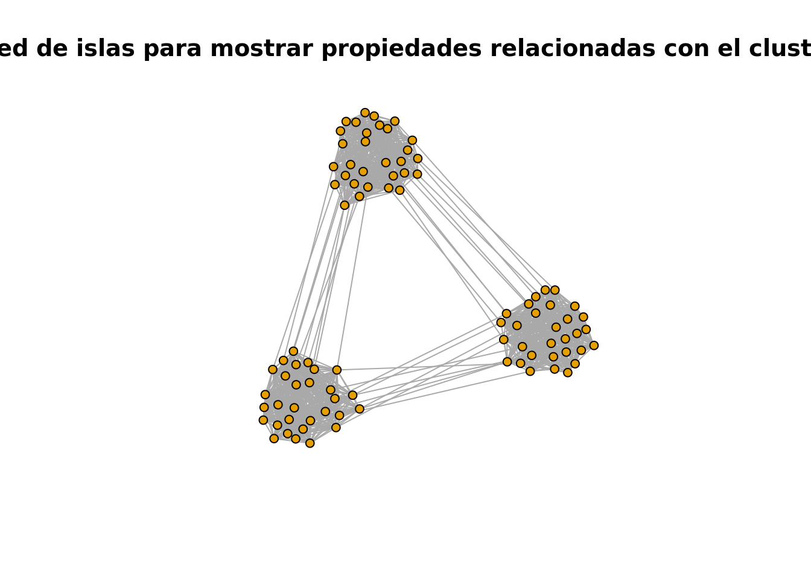
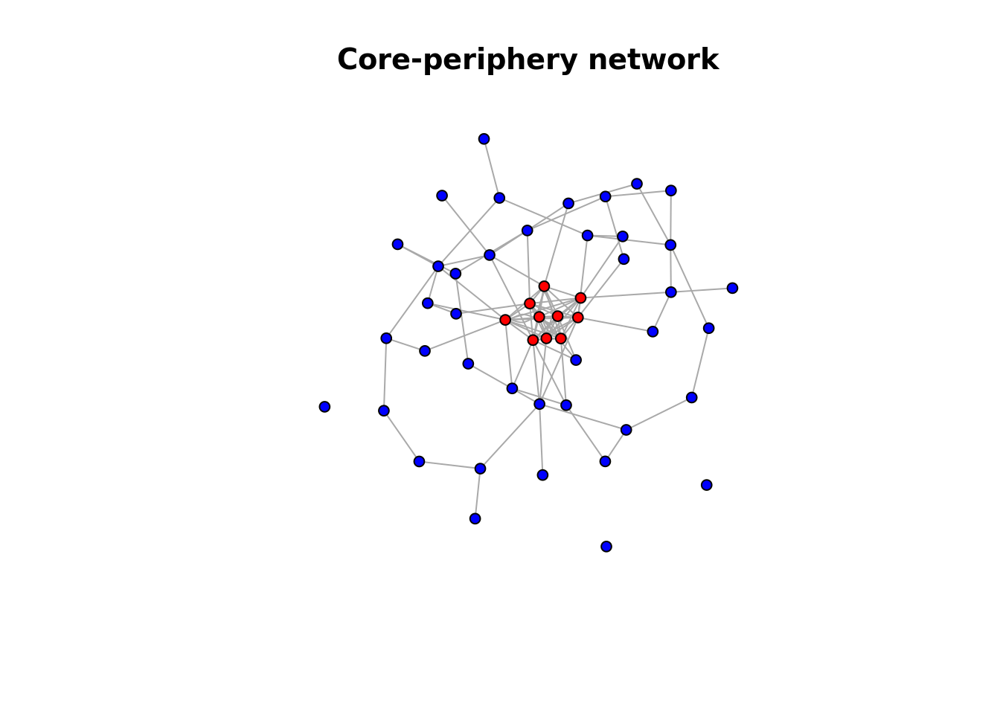
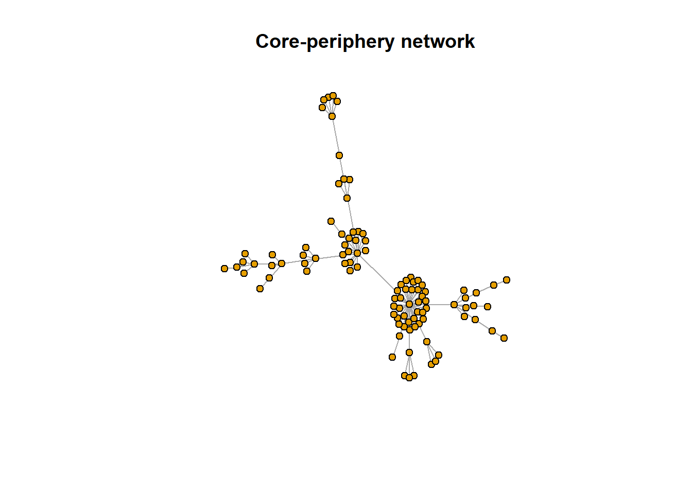
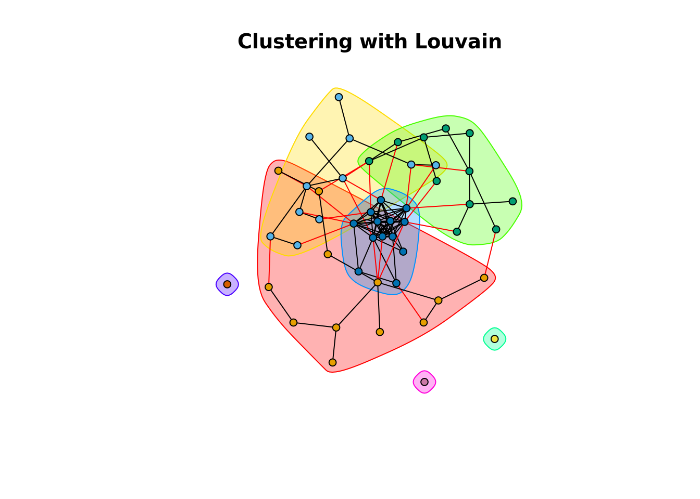
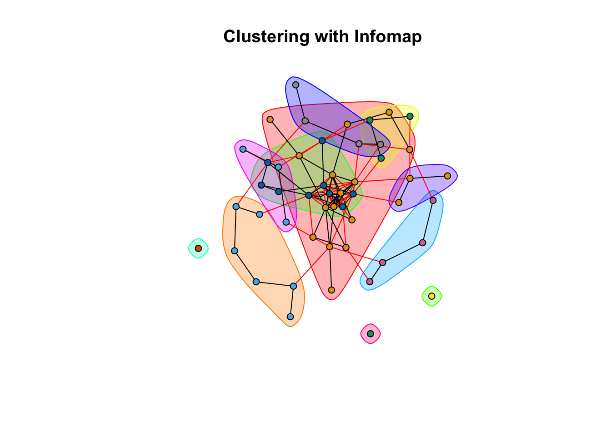
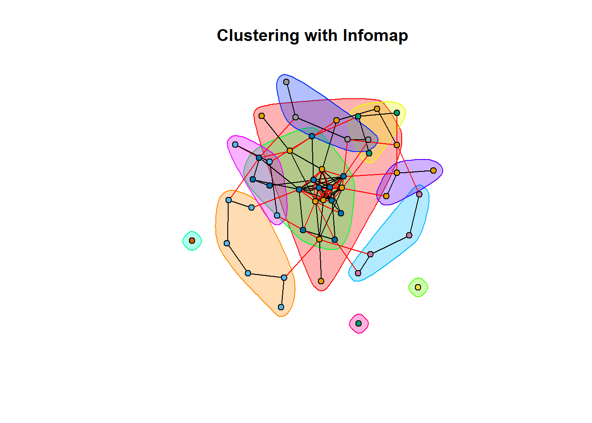

# Load required packages
if (!requireNamespace("igraph", quietly = TRUE)) install.packages("httr")
if (!requireNamespace("igraph", quietly = TRUE)) install.packages("jsonlite")
if (!requireNamespace("igraph", quietly = TRUE)) install.packages("igraph")
if (!requireNamespace("STRINGdb", quietly = TRUE)) BiocManager::install("STRINGdb")
library(httr)
library(jsonlite)
library(igraph)
library(STRINGdb)
# API request to get genes associated with the HPO term for abnormal renal corpuscle morphology
hpo_id <- "HP:0031263" # HPO ID for abnormal renal corpuscle morphology
url <- paste0("https://ontology.jax.org/api/network/annotation/", hpo_id)
response <- GET(url)
data <- content(response, as = "text", encoding = "UTF-8")
genes <- fromJSON(data)$genes
# Initialize STRINGdb
# Can you see anything different here compared to the last practical?
string_db <- STRINGdb$new(version = "12", species = 9606, score_threshold = 400, input_directory = "")
string_ids <- string_db$map( genes, "name", removeUnmappedRows = TRUE )
interaction_network <- string_db$get_interactions(string_ids$STRING_id)
interaction_network <- unique(interaction_network[, 1:2]) # necessary step to remove duplicate interactions
interaction_network$to <- string_ids$name[match(interaction_network$to, string_ids$STRING_id)]
interaction_network$from <- string_ids$name[match(interaction_network$from, string_ids$STRING_id)]
# How can I see how big the network is? How does it compare to last week?3 Práctica Redes 2: Clusterizacion y Enriquecimiento Funcional
En este práctico, nos enfocaremos en regenerar la red de interacción genética de la semana pasada utilizando STRINGdb. Luego, aplicaremos algoritmos de clustering para identificar grupos de genes altamente conectados. Posteriormente, realizaremos un análisis de sobre-representación utilizando clusterProfiler para interpretar los posibles roles biológicos de estas comunidades. Finalmente, visualizaremos los resultados de enriquecimiento de manera clara y efectiva. Usaremos los genes asociados al fenotipo de morfología anormal del corpúsculo renal que obtuvimos en la práctica anterior.
3.1 Parte 1: Regenerando la Red de Interacción (Recordatorio)
En esta sección, recordaremos cómo construir una red de interacción utilizando STRINGdb y convertirla a un formato que podamos usar con la librería igraph en R.
3.1.1 ¿Qué es STRINGdb?
STRINGdb es una base de datos que proporciona información sobre interacciones entre proteínas y genes, así como las evidencias que respaldan estas interacciones. Utiliza datos de diversas fuentes, incluyendo experimentos de laboratorio, datos de literatura y predicciones computacionales.
3.1.2 Preguntas de Reflexión (recordatorios)
¿Qué tipo de información proporciona STRINGdb sobre las interacciones entre genes?
STRINGdb proporciona una amplia gama de información sobre las interacciones entre genes y proteínas. Esto incluye interacciones físicas directas, como enlaces proteicos, e interacciones funcionales, donde las proteínas pueden estar involucradas en los mismos procesos biológicos sin interactuar físicamente. Las interacciones están respaldadas por diferentes tipos de evidencias, como datos experimentales, coexpresión, similitud de dominios, y estudios computacionales. Además, STRINGdb asigna una puntuación de confianza (confidence score) a cada interacción, lo que ayuda a evaluar la fiabilidad de la conexión entre los genes o proteínas en la red.¿Por qué es importante establecer un umbral de puntuación (score_threshold) al obtener interacciones?
El umbral de puntuación (score_threshold) es crucial porque permite filtrar las interacciones según su grado de confianza o fiabilidad. STRINGdb asigna un score a cada interacción basado en la calidad y cantidad de evidencia que respalda la relación entre los genes o proteínas. Un valor más alto indica una mayor confianza en la interacción. Al ajustar el umbral, se puede obtener una red más robusta y precisa, eliminando interacciones que podrían ser falsas o de baja confianza. Si el umbral es muy bajo, podrías obtener demasiadas interacciones espureas; si es demasiado alto, podrías perder conexiones importantes pero menos documentadas.¿Cómo se relacionan las interacciones en la red con las funciones biológicas de los genes involucrados?
Las interacciones en la red pueden proporcionar información clave sobre las funciones biológicas de los genes involucrados. Genes que estén conectados en una red suelen participar en procesos biológicos relacionados, como rutas metabólicas, señalización celular, o respuestas a estímulos. Las redes permiten identificar módulos o agrupaciones de genes que trabajan juntos, lo cual puede revelar nuevas funciones biológicas o ayudar a comprender mejor las rutas moleculares en las que participan. Al analizar estas interacciones, los investigadores pueden inferir funciones desconocidas para algunos genes basándose en los genes con los que están conectados en la red, un concepto conocido como "guilt by association".3.2 Parte 2: Clustering de la Red con igraph
3.2.1 ¿Qué es el clustering?
El clustering en redes es el proceso de identificar grupos de nodos (genes, en este caso) que están más densamente conectados entre sí que con otros nodos de la red. Este enfoque permite detectar módulos o clusters, que pueden representar vías de señalización o grupos funcionales de genes que operan juntos.
3.2.2 Teoría Detrás del Clustering
3.2.2.1 Conceptos Fundamentales
Teoría de Grafos: En el contexto de las redes, los grafos se componen de nodos (genes) y aristas (interacciones).
Centralidad (Centrality): La centralidad mide la importancia de un nodo dentro de la red. Hay varias formas de calcular la centralidad:
- Centralidad de Grado (Degree Centrality): Número de conexiones que tiene un nodo. Un alto grado puede indicar un nodo clave en la red.
- Centralidad de Intermediación (Betweenness Centrality): Indica cuántas veces un nodo actúa como un puente a lo largo de los caminos más cortos entre otros nodos. Los nodos con alta centralidad de intermediación pueden controlar la comunicación en la red.
- Centralidad de Cercanía (Closeness Centrality): Mide qué tan cerca está un nodo de todos los demás nodos en la red, lo que puede reflejar su capacidad para acceder rápidamente a información.
Densidad (Network Density): Se refiere a la proporción de conexiones existentes en la red en comparación con el número máximo posible de conexiones. Una red densa puede indicar una alta interconexión entre nodos, lo cual es fundamental para la identificación de clusters.
Modularidad (Modularity): La modularidad es una medida de la estructura de la red que indica la calidad de la división en módulos o clusters. Un clustering con alta modularidad tiene muchas conexiones dentro de los clusters y pocas entre ellos. La optimización de la modularidad es un objetivo común en muchos algoritmos de clustering.
Caminos y Conectividad (Paths and Connectivity): La existencia de caminos cortos y la conectividad entre nodos son cruciales para el clustering. Los clusters suelen tener caminos más cortos entre sus nodos que con nodos externos, lo que refleja su cohesión.
3.2.2.2 Visualizando los conceptos
Para ilustrar estos conceptos, utilizaremos la función `sample_islands de igraph para crear un grafo sintético compuesto por “islas” o clústeres densamente conectados y parcialmente aislados. Este tipo de red es ideal para demostrar varios principios importantes de la teoría de grafos y el análisis de redes, incluyendo centralidad, modularidad, densidad y conectividad. A continuación, se explica cómo se relaciona con cada uno de estos principios:
# Load required packages
if (!requireNamespace("igraph", quietly = TRUE)) install.packages("igraph")
library(igraph)
Attaching package: 'igraph'The following objects are masked from 'package:stats':
decompose, spectrumThe following object is masked from 'package:base':
union# Create a network to illustrate important principles
g <- sample_islands(3, 30, 0.9, 10)
# Visualize the graph
plot(g, vertex.size=5, vertex.label=NA, edge.arrow.size=0.2, main="Red de islas para mostrar propiedades relacionadas con el clustering")
3.2.2.3 How the Sample_Islands Network Demonstrates These Principles:
- Intra-island: Nodes within islands are densely connected, showcasing high local density, short paths, and high modularity within clusters. These nodes have high degree and closeness centrality relative to their island.
- Inter-island: Nodes connecting different islands have high betweenness centrality since they serve as bridges between different communities. These nodes control information flow across the network.
- The sparsity of connections between islands demonstrates how low global density and longer inter-cluster paths create well-separated clusters, ideal for modularity-based clustering.
3.2.2.4 Cómo la Red de Sample_Islands Demuestra Estos Principios:
Intra-isla: Los nodos dentro de las islas están densamente conectados, mostrando una alta densidad local, caminos cortos y alta modularidad dentro de los clústeres. Estos nodos tienen una centralidad de grado y cercanía alta en relación con su propia isla.
Inter-isla: Los nodos que conectan diferentes islas poseen una alta centralidad de intermediación, ya que funcionan como puentes entre diferentes comunidades. Estos nodos controlan el flujo de información a través de la red.
La escasez de conexiones entre islas demuestra cómo una baja densidad global y caminos más largos entre clústeres crean clústeres bien separados, ideales para agrupamiento basado en modularidad.
3.2.3 Distintos algoritmos para clusterizar una red
3.2.3.1 Generación de una Red con Estructura Core-Periphery
Vamos a generar una red que simule una estructura core-periphery usando la librería igraph. Esta estructura nos permitirá ver cómo los diferentes algoritmos de clustering lidian con un núcleo denso de nodos interconectados y una periferia menos conectada.
# Generate a core-periphery network
set.seed(123)
g <- sample_gnp(50, 0.05) # Periphery: sparse network
core_nodes <- sample(1:vcount(g), 10) # Select core nodes
g <- add_edges(g, combn(core_nodes, 2)) # Add dense connections in the core
V(g)$color <- ifelse(1:vcount(g) %in% core_nodes, "red", "blue") # Color nodes based on core or periphery
# Visualize the network
set.seed(123)
plot(g, vertex.size=5, vertex.label=NA, edge.arrow.size=0.2, main="Core-periphery network")
En esta red, los nodos rojos representan el núcleo, un grupo densamente interconectado, mientras que los nodos azules representan la periferia, que tiene conexiones más dispersas. Esta estructura simula la organización biológica donde un grupo central de genes podría estar estrechamente vinculado funcionalmente, mientras que los genes periféricos podrían estar involucrados en funciones más especializadas o de soporte.
3.2.3.2 Generación de una Red tipo Barabási–Albert
Vamos a generar una red que simule una red de tipo libre de escala. Esto es un modelo de red basado en “rich get richer” o de ventaja acumulativa. Los nodos con mayor grado tienen mayor probabilidad de generar nuevas conexiones que los de menor grado. La distribución del grado de los nodos sigue una ley de potencial.
# Generate a core-periphery network
set.seed(123)
g_ba <- sample_pa(100, power = 1.9, directed = FALSE)
plot(g_ba, vertex.size=5, vertex.label=NA, edge.arrow.size=0.2, main="Core-periphery network")
3.2.3.3 Algoritmos de Clustering
- Algoritmo de Louvain
El algoritmo de Louvain optimiza la modularidad, agrupando nodos de manera que se maximicen las conexiones dentro de los clusters y se minimicen entre clusters. Este algoritmo es eficiente para redes grandes y suele identificar grandes clusters en el núcleo.
# Clustering using the Louvain algorithm
cluster_louvain <- cluster_louvain(g)
set.seed(123)
plot(cluster_louvain, g, vertex.size=5, vertex.label=NA, edge.arrow.size=0.2, main="Clustering with Louvain")
Observación: En redes core-periphery, Louvain puede identificar el núcleo como un único cluster grande, mientras que los nodos periféricos pueden agruparse en pequeños clusters dispersos.
Enfoque tipo agregativo no jerárquico.
- Algoritmo de Girvan-Newman
El algoritmo de Girvan-Newman se basa en la eliminación de aristas con alta centralidad de intermediación. Al eliminar las conexiones clave (de alta centralidad de intermediación), divide la red en clusters más pequeños, lo que puede descomponer el núcleo en subclusters.Posee alto coste computacional, así que es mejor sólo para redes medianas o pequeñas.
- Enfoque jerárquico y divisivo.
# Clustering using the Girvan-Newman algorithm
cluster_girvan_newman <- cluster_edge_betweenness(g)
set.seed(123)
plot(cluster_girvan_newman, g, vertex.size=5, vertex.label=NA, edge.arrow.size=0.2, main="Clustering with Girvan-Newman")
- Observación: Girvan-Newman es capaz de dividir las comunidades de manera solapante.
- Algoritmo de Infomap El algoritmo Infomap utiliza flujos de información para identificar clusters en la red. Al modelar cómo se transmite la información entre los nodos, Infomap puede identificar tanto clusters en el núcleo como en la periferia. De gran escalabilidad para redes grandes.
# Clustering using the Infomap algorithm
cluster_infomap <- cluster_infomap(g)
set.seed(123)
plot(cluster_infomap, g, vertex.size=5, vertex.label=NA, edge.arrow.size=0.2, main="Clustering with Infomap")
- Observación: Infomap es particularmente útil para identificar subestructuras ocultas dentro de redes complejas como las de core-periphery, donde el flujo de información entre nodos puede revelar clusters que otros algoritmos pasan por alto.
Reflexión sobre los Resultados Cada uno de estos algoritmos ofrece una interpretación diferente de la red con estructura core-periphery. Por ejemplo:
- Louvain tiende a identificar grandes clusters, pero puede pasar por alto subestructuras dentro del núcleo.
- Girvan-Newman es capaz de obtener clusters menores al jugar con el solapamiento.
- Infomap ofrece una visión única basada en los flujos de información a través de la red, detectando clusters tanto en el núcleo como en la periferia.
El clustering en redes biológicas es una herramienta poderosa para identificar módulos funcionales y estructuras subyacentes. Sin embargo, como hemos visto con la red core-periphery, no existe un único algoritmo que funcione para todas las redes. Cada uno tiene sus ventajas y limitaciones, y la elección del algoritmo adecuado depende de la naturaleza de la red y de los objetivos del análisis.
3.2.3.4 Preguntas
¿Por qué es importante considerar la centralidad de intermediación (betweenness centrality) cuando analizamos redes biológicas?
La centralidad de intermediación indica cuántas veces un nodo actúa como un puente entre otros nodos a lo largo de los caminos más cortos. En redes biológicas, esto puede representar genes o proteínas clave que controlan la comunicación entre distintos módulos funcionales. Los nodos con alta centralidad de intermediación son esenciales para mantener la conectividad global de la red, y su eliminación podría fragmentar la red y aislar módulos, lo que puede tener implicaciones biológicas críticas.¿Qué diferencia hay entre la modularidad alta y baja en el clustering de redes, y cómo afecta la interpretación de los clusters?
Una modularidad alta indica que los nodos dentro de un cluster están muy interconectados, y hay pocas conexiones con nodos fuera del cluster. Esto sugiere que el cluster representa un grupo funcional cohesivo. Por el contrario, una modularidad baja sugiere que los clusters no están bien definidos, con muchas conexiones externas, lo que dificulta la interpretación biológica. Los clusters con alta modularidad suelen corresponder a módulos funcionales claros, mientras que una baja modularidad puede reflejar procesos difusos o redes ruidosas.¿Qué ventajas ofrece set.seed() cuando se trabaja con redes aleatorias o algoritmos estocásticos en el análisis de redes, y en qué situaciones sería más útil?
El uso de set.seed() permite que los resultados de procesos aleatorios sean reproducibles. En el análisis de redes, donde a menudo se utilizan grafos aleatorios o algoritmos estocásticos, fijar una semilla garantiza que la misma red o resultado se obtenga en cada ejecución del código. Esto es especialmente útil cuando se documentan los resultados o cuando se quiere comparar entre diferentes configuraciones o pruebas. En situaciones de enseñanza o investigación, permite que todos los involucrados trabajen con la misma estructura de red, facilitando la comprensión y el análisis.3.2.4 Applying algorithms to our network
Create a new chunk in your Rmd documents and write code to apply the three clustering algorithms to the interaction network we created at the start of this practical. You may need to look at your notes from the
previous practical to create and igraph object from a data.frame.
Caution
g <- graph_from_data_frame(interaction_network, directed = FALSE)
cluster_louvain <- cluster_louvain(g)
set.seed(123)
plot(cluster_louvain, g, vertex.size=5, vertex.label=NA, edge.arrow.size=0.2, main="Clustering with Louvain")
cluster_girvan_newman <- cluster_edge_betweenness(g)
set.seed(123)
plot(cluster_girvan_newman, g, vertex.size=5, vertex.label=NA, edge.arrow.size=0.2, main="Clustering with Girvan-Newman")
cluster_infomap <- cluster_infomap(g)
set.seed(123)
plot(cluster_infomap, g, vertex.size=5, vertex.label=NA, edge.arrow.size=0.2, main="Clustering with Infomap")3.3 Functional Enrichment
3.3.1 Background and Theory
3.3.2 Visualization
3.3.3 Application to all abnormal renal corpuscle morphology genes
3.3.4 Application to the genes belonging to different clusters
Show that for some clusters much lower p-values (assuming the case, e.g. for mitochondria or NUPs)
To add